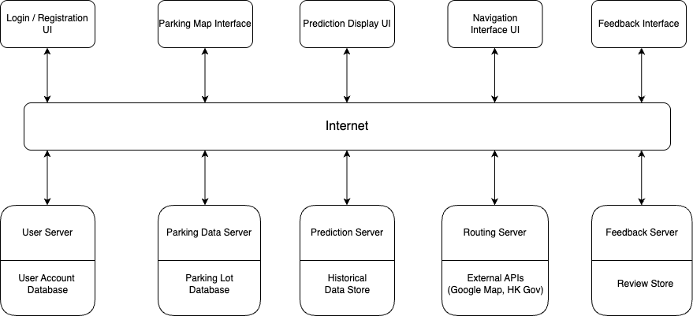
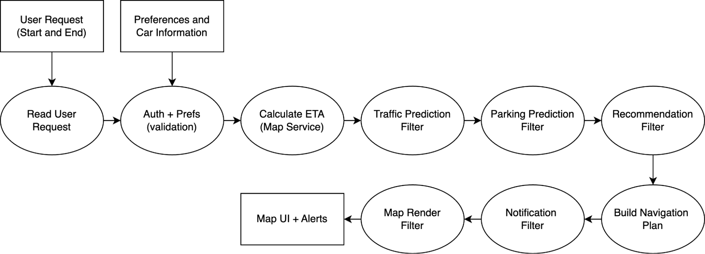
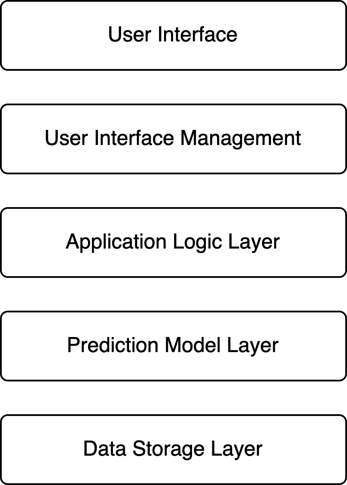

| Purpose | Library or Framework | Programming Language | App Framework |
|---|---|---|---|
| Frontend Development | React, JavaScript, C#, Python | JavaScript, C#, Python | Next.js |
| Component | Technology Stack |
|---|---|
| Server Framework | Next.js |
| ML Prediction | Python / C# |
| Authentication | JWT |
| API Design | Next.js |
| Data Type | Technology |
|---|---|
| User & Parking Data | PostgreSQL with TimescaleDB extension |
| Real-time Cache & Sessions | Redis or MongoDB |

Figure: Client Server Architecture Diagram
| Client Interface | Description of Client | Associated Server | Description of Server |
|---|---|---|---|
| Login / Registration | Interface for user sign-up and login. Sends an HTTP request with user credentials. | User Server | Handles authentication and stores account info in the User Account Database. Sends HTTP responses with tokens. |
| Parking Map Interface | Interface that displays real-time parking availability on a map. | Parking Data Server | Fetches and processes live parking data from external sources (e.g., HK Gov API). Sends color-coded availability data. |
| Prediction Display | Interface that shows forecasted parking availability for the next 1–2 hours. | Prediction Server | Runs a machine learning model using historical data to generate predictions |
| Navigation Interface | Allows users to get directions to a selected parking lot using turn-by-turn routing. | Routing Server | Uses Google Maps API to calculate and send optimized routes, traffic-aware ETA, and rerouting instructions. |
| Feedback | Interface for submitting feedback and viewing user reviews for parking lots. | Feedback Server | Collects, stores, and manages feedback and ratings. Connects to Parking Lot DB and User DB for context. |

Figure: Pipe and Filter Architecture Diagram
| Layer | Core Functions |
|---|---|
| User Interface |
- Display interactive map with navigation routes - Show real-time parking availability markers |
| User Interface Management |
- Handle user input validation - Manage UI state and transitions - Coordinate between UI and application logic |
| Application Logic Layer |
- Calculate optimal routes with parking - Process reservations and payments - Manage notification system |
| Prediction Model Layer |
- Analyze traffic patterns - Predict parking spot availability - Calculate dynamic pricing |
| Data Storage Layer |
- Store user profiles and preferences - Maintain parking location database - Archive historical traffic data |

Figure: Layered Architecture Diagram